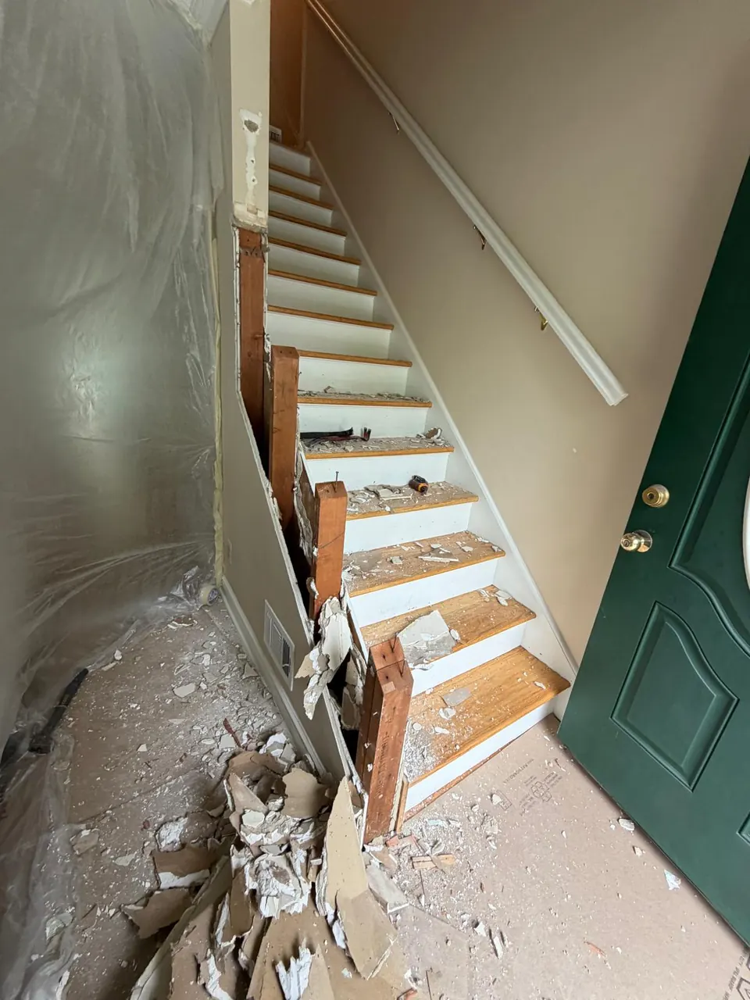
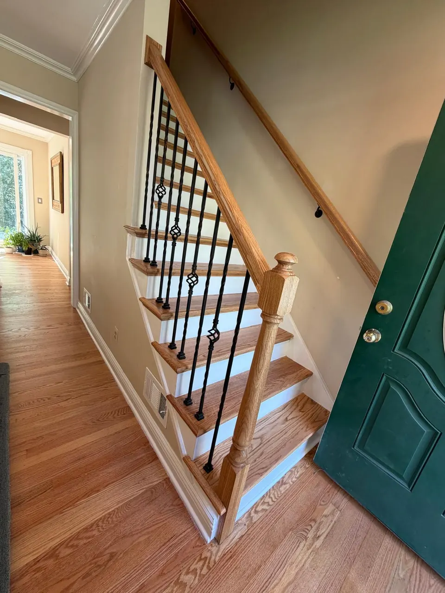

In this article
Quick answer
The cost of replacing carpet with hardwood in New Jersey depends on square footage, hardwood species, subfloor condition, labor, and whether carpet removal or repairs are needed. Smaller projects may take a few days, while larger whole-floor jobs take longer. The best way to get an accurate number is a free in-home estimate.
Introduction
Replacing old carpet with hardwood is one of the most meaningful upgrades a New Jersey homeowner can make. It changes the look of the home, but it also changes how the home feels and functions every day. For busy families in places like Westfield, Summit, Short Hills, Millburn, Chatham, Madison, Livingston, Cranford, Berkeley Heights, New Providence, and Montclair, this decision usually comes down to more than style. It is about cleaner air, easier maintenance, better durability, and a smoother home life for kids and pets.
That is why many homeowners start their search with a simple question: what is the replace carpet with hardwood floor cost NJ families should realistically plan for? The real answer depends on square footage, carpet removal, subfloor conditions, material choice, staircase work, and whether any repairs are needed before installation. Just as important, the cost should be understood alongside the timeline, the disruption, and the long-term value.
At Costa Flooring, we help homeowners make this transition in a practical, organized way. With more than 10 years of flooring experience, licensed and insured service, premium flooring materials, and honest recommendations, the process becomes much easier to manage. In qualifying hardwood installation projects, we also offer free carpet removal and free debris removal, which can simplify the planning process for busy households.
If you are weighing whether to upgrade now or later, this guide will help you understand what to expect before you commit. It covers cost drivers, project timing, dust control, family-friendly planning, and the reasons hardwood continues to be one of the most trusted flooring choices for suburban New Jersey homes.
How long a carpet-to-hardwood project usually takes
Most homeowners want to know how long the home will be in transition. That is a fair question, especially when children, pets, work schedules, and school routines are all part of the equation. The timeline for a carpet-to-hardwood project can vary, but a typical job often follows a predictable sequence.
Step 1
In-home estimate
Measurements, a look at the existing flooring and a check for squeaks, damaged plywood or uneven transitions.
Step 2
Material and scheduling
In-stock flooring moves faster; special orders can shift the start date.
Step 3
Carpet and debris removal
Carpet, padding, tack strips and staples come out and leave the house.
Step 4
Subfloor repair, if needed
Water damage, squeaks or unevenness get fixed before any wood goes down.
Step 5
Installation
A few days for a smaller project; longer for a full main floor, stairs or several rooms.
Step 6
Cleanup and walk-through
Clear timing on when you can walk on the floor and move furniture back.
First comes the in-home estimate. This is when measurements are taken, existing flooring is evaluated, and the scope of work is discussed. At this stage, a skilled contractor can identify whether the old carpet is hiding issues such as squeaky subfloors, damaged plywood, or uneven transitions between rooms. That early inspection matters because it affects both price and schedule.
Next comes material selection and scheduling. If the flooring is in stock, the job can often move faster. If special ordering is needed, the start date may shift. For homeowners in fast-moving markets like Westfield or Livingston, many choose to move quickly once the decision is made so the project fits within a short window before guests arrive, school starts, or a home sale goes live.
Once installation begins, the actual timeline depends on the size of the home and the amount of prep work required. A smaller project may take only a few days. A larger main-floor replacement, especially one that includes stair installation, baseboards, floor repair, or multiple rooms, may take longer. Refinishing existing hardwood elsewhere in the home adds another layer of scheduling.
For many families, the biggest concern is not the total calendar time but how disruptive the process feels day to day. That is why organization matters so much. A contractor who handles carpet removal, debris removal, and installation with a clear sequence can reduce confusion and help the project move with less stress.
If you are comparing flooring companies in areas like Summit, Millburn, Chatham, or Montclair, ask specific timeline questions during your estimate. A trustworthy installer should explain what happens each day, when rooms will be off-limits, and how soon you can walk on the new floors after completion. That level of clarity is one of the strongest signs that the project will be handled properly.
What affects the replace carpet with hardwood floor cost NJ homeowners should expect
The phrase replace carpet with hardwood floor cost NJ sounds simple, but the final number usually reflects several moving parts. Homeowners often begin by comparing basic material prices, but that only tells part of the story. A realistic budget should account for the full scope of the work, not just the boards themselves.
- Square footageMore area, more material, labor and time.
- Hardwood typeSpecies, plank width, finish and stain color.
- Carpet removalStapled, glued or layered carpet takes longer.
- Subfloor conditionRepairs change the budget before install.
- StairsMatching stairs to the new floor adds detail work.
- Baseboards and trimOptional, but often what makes it look finished.
- Labor qualityRushed work costs more later.
One of the biggest cost factors is the size of the area being converted. More square footage means more material, more labor, and more time. A single bedroom is very different from a full first floor or a combined living and dining layout. Homes in larger suburban neighborhoods such as Short Hills or New Providence may have open plans that increase the total install area, while older homes in places like Cranford or Madison may involve more transitions and custom fitting.
Another major factor is the type of hardwood selected. Some homeowners want a classic oak look. Others prefer a wider plank, a more modern finish, or a specific stain color that complements the home's trim and cabinetry. Premium flooring materials can cost more up front, but many families choose them because they hold up well and improve long-term resale appeal.
Carpet removal is another variable. In many projects, this step is straightforward. In others, the old flooring may be heavily stapled, glued, or layered over older materials. Costa Flooring offers free carpet removal with qualifying hardwood installation projects, which can make the upgrade easier to plan. Still, the condition of the subfloor underneath matters just as much as the carpet itself.
If the subfloor needs work, the budget will change. Some homes need minor repairs before the new wood can be installed. Others may require more attention if there is water damage, squeaking, or unevenness. In those cases, a contractor who also handles floor repair can keep the process efficient by correcting the issue before the new floor goes down.
Staircases can also affect cost. If the project includes stair installation or matching stairs to the new flooring, the work becomes more detailed. Many suburban homeowners in Westfield or Berkeley Heights choose to update stairs at the same time because it creates a cleaner, more cohesive look.


Before AfterBaseboards and trim are another consideration. Fresh floors often look best when paired with updated baseboards, especially if the old carpet covered part of the wall edge or left an outdated trim line behind. While this is not always required, it can improve the final presentation significantly.
Finally, the labor quality itself matters. A lower price may look attractive at first, but it can become expensive if the work is rushed, unfinished, or poorly communicated. High-quality workmanship, professional installation, and honest recommendations are worth paying attention to because they reduce the risk of mistakes that cost more later.
If you are comparing options in areas like Hackettstown, Flemington, Clinton, Phillipsburg, or Whitehouse Station, the best approach is to ask for a free in-home estimate and a clear breakdown of what is included. That helps you understand the actual value instead of just the headline price.
What families should do before installation begins
A successful flooring project starts before the first board is installed. For busy families, preparation can make the difference between a smooth transition and a stressful one. The good news is that preparation does not need to be complicated.
Start by deciding which rooms are part of the project and which ones need to remain fully usable. If the flooring is being replaced in a main living area, you may need to temporarily shift furniture, pets, or play areas to other parts of the home. This matters even more in homes with young children, because routines like naps, meals, and homework time may need to continue while the work is underway.
Next, clear personal items from the affected rooms. Contractors can handle the flooring, but homeowners should remove fragile decor, loose items, and valuables ahead of time. That speeds up the process and helps protect your belongings.
It also helps to think through access. Installers need a clear path from the entrance to the work area so materials can be brought in safely. If the project includes carpet removal NJ homeowners should expect the old flooring to be carried out before the new material is installed. With free debris removal on qualifying projects, that step becomes easier to manage.

If you have pets, plan for them in advance. Dogs and cats can become anxious when rooms are blocked off or new people are moving through the home. Many homeowners arrange to keep pets in a separate part of the house or with family during the noisiest phase of the project. That is especially useful when installation is happening in high-traffic areas.
Families should also talk through the daily schedule before work begins. Ask which rooms will be unavailable, whether the home can stay occupied during the installation, and when it will be safe to move furniture back in. A good contractor should answer these questions clearly. That is part of what makes the process feel manageable rather than disruptive.
For homeowners in places like Millburn, Chatham, and Livingston, where many homes are active all day with school, work, sports, and activities, a well-planned schedule matters as much as the flooring itself. The right installer will respect that reality and work in a way that keeps life moving.
Dust, cleanup, and what "dust-free" really means
Many homeowners search for dust-free hardwood installation because they want a cleaner home during the project. That concern is understandable. Removing old carpet and preparing a room for new hardwood does create some dust and debris, especially if the subfloor needs attention. No flooring project is completely dust-free in the literal sense, but a well-managed job can be far cleaner than people expect.
What matters most is control. Professional installers use methods that limit how much dust spreads, keep the work area contained, and remove debris promptly. That starts with careful demolition and continues through cleanup after each stage. When carpet, tack strips, staples, and underlayment are removed properly, the mess stays more contained.
This is one reason homeowners often prefer working with a company that handles both the install and the cleanup instead of trying to coordinate multiple contractors. When the same team manages removal and installation, the process is more efficient and the home is less likely to be left in an unfinished state.
Costa Flooring places a strong emphasis on professional cleanup and free debris removal on qualifying projects. That is especially valuable for families who do not want old carpet, padding, and installation waste sitting around their home for days. It also helps keep common spaces usable sooner. (Refinishing existing floors instead? Read is dustless refinishing really dust-free.)
For homeowners concerned about allergies, better cleanup is not just a convenience. It matters for comfort. Old carpet can trap dust, pet dander, and other particles that are hard to remove with regular vacuuming. Once the carpet is gone, the home can feel noticeably easier to maintain. That is one of the reasons many people consider hardwood among the best hypoallergenic flooring options NJ families can choose.
If your household includes children who play on the floor or pets that spend a lot of time indoors, cleaner flooring can make day-to-day life simpler. The absence of trapped fibers and old padding can make a surprising difference in how fresh the home feels.
How to keep daily life moving during the project
One of the biggest questions families ask is whether they will need to leave the home during installation. In many cases, the answer is no, but the experience depends on the size of the project and how the work is staged. The key is planning.
For smaller projects, homeowners may be able to stay in the home comfortably while the work is being completed in another area. For larger projects, the family may need to shift between rooms for a few days. The best contractors will explain this upfront so there are no surprises.
A practical approach is to create a temporary routine before the work starts. That might mean setting up a meal area in another room, moving a pet bed into a quiet space, or establishing a safe zone for children's toys. Families in suburban New Jersey often have busy schedules, so minimizing friction at home is essential.
The same applies to furniture. Some homeowners want the contractor to move everything, while others prefer to handle part of it themselves. The right approach depends on the scope of work and the arrangement discussed during the estimate. Clear communication makes all the difference.
Another important point is walkability. Homeowners often ask when they can step on the new floor and when they can fully move furniture back. That depends on the material and the finishing process. A trustworthy installer will explain the safe timeline so you are not guessing.
In neighborhoods like Montclair, Westfield, and Summit, where homes often serve as offices, playrooms, and entertaining spaces all at once, homeowners usually appreciate a team that works cleanly, schedules efficiently, and respects the household's daily rhythm. That is exactly the kind of experience Costa Flooring aims to provide.
If your home is getting harder to manage because the carpet is worn, stained, or simply outdated, it may be time to replace it with a floor that gives you more freedom and less maintenance. A hardwood upgrade can simplify the way the entire house functions.
Why hardwood is often the better long-term choice
For many homeowners, the decision to replace carpet is not only visual. It is practical. Carpet can look fine for a while, but over time it starts to absorb odors, hold onto stains, and trap debris that routine cleaning cannot fully remove. In a busy family home, that becomes obvious fast.
Hardwood floors offer a cleaner, more durable alternative. They are easier to sweep, mop, and maintain. They do not hold dust and debris the way carpet fibers do, which is one reason many homeowners exploring hypoallergenic flooring options NJ families can rely on eventually choose hardwood. More on that in 5 benefits of ditching carpet for hardwood.
Hardwood is also a strong long-term investment. Unlike carpet, which often needs to be replaced after years of wear, hardwood can last for decades when properly installed and maintained. If the surface ever becomes scratched or dulled, hardwood floor refinishing may restore its appearance instead of forcing a full replacement. That flexibility adds real value over time.
There is also the home value factor. In many suburban markets, including Millburn, Chatham, Madison, and Short Hills, well-finished hardwood flooring is often viewed as a premium feature. It can help a home feel more updated, more spacious, and more appealing to future buyers. For homeowners planning to sell, this can make the investment especially worthwhile.
From a daily living standpoint, hardwood tends to be more forgiving in homes with children and pets. Spills are easier to clean, hair is easier to remove, and the floor does not hold the same deep-set stains that carpet can. That does not mean hardwood is indestructible, but it does mean maintenance is simpler and the home is easier to keep presentable.
Some homeowners also choose Luxury Vinyl Plank (LVP) or Laminate Flooring when they want a different budget or performance profile. Those can be excellent options in certain rooms, especially when durability and moisture resistance are priorities. Still, when the goal is to upgrade a suburban home with a high-end feel, hardwood remains the benchmark for many families. Our LVP vs. hardwood comparison breaks it down room by room.
In other words, this project is not just about replacing something old. It is about building a home that works better every day.
Related flooring services that may help your project
A carpet-to-hardwood project often opens the door to additional improvements. That is not because homeowners need to add more work for the sake of it, but because certain updates make the final result look and perform better.
If part of your existing hardwood already shows wear, you may want to consider hardwood floor refinishing in adjacent areas so the new installation blends naturally with the rest of the home. This is common when only part of the first floor is being changed or when a family wants a more unified appearance throughout the main living spaces.
If there are problem spots in the subfloor or old transitions that need attention, floor repair may be the right first step. Addressing damage before the new floor is installed is usually the smartest choice because it protects the long-term integrity of the project.
For stairs, matching the new flooring to the existing structure can create a polished, cohesive look. That is where stair installation or stair updates become valuable. Many homeowners in Westfield, Cranford, and Berkeley Heights choose to address the stairs at the same time because they are highly visible and affect the overall impression of the house.
Fresh baseboards can also elevate the finished look. When carpet comes out, old trim lines may become visible, and updated baseboards can make the room feel complete. Even a small trim upgrade can help the new flooring look like it truly belongs in the home.
Finally, some homes benefit from mixing materials. For example, a homeowner may choose hardwood in the main rooms but use Luxury Vinyl Plank (LVP) or Laminate Flooring in a lower-traffic or more budget-sensitive area. The right recommendation depends on the layout, lifestyle, and goals of the household.
That is why honest recommendations matter. A good flooring specialist should help you choose the right material for each part of the home instead of pushing one option everywhere.
Conclusion
If your carpet is stained, worn down, or simply no longer fitting the way your family lives, replacing it with hardwood may be one of the smartest upgrades you can make. The value is not just in the look of the floor. It is in the cleaner air, the easier maintenance, the better durability, and the more polished feel it brings to the home.
For homeowners in Westfield, Summit, Short Hills, Millburn, Chatham, Madison, Livingston, Montclair, Cranford, Berkeley Heights, and New Providence, the decision often comes down to choosing a contractor who can make the process straightforward. That is where Costa Flooring stands out. With more than 10 years of flooring experience, licensed and insured service, hardwood flooring specialists, premium flooring materials, honest recommendations, free carpet removal on qualifying hardwood installation projects, free debris removal, and a strong reputation for high-quality workmanship, the transition becomes much easier to trust.
If you are ready to replace carpet with hardwood floor cost NJ homeowners can plan around with confidence, schedule a free in-home estimate today. Call (862) 452-2181 and take the first step toward a cleaner, healthier, and more beautiful home.